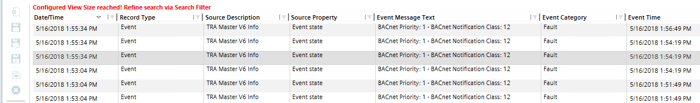

Analyzing Log Data
Scenario: You can analyze the collected Log data by using a number of filters.
- In System Browser, select Log Viewer.
- Click Log Viewer .
- The Log Viewer opens.
- Continue with the further workflows as needed.

Printing Log Grid Contents
- Click Print
 .
. - In the Print dialog box, select the desired printer and specify the printing configurations.
- Click Print.

NOTE:
The size of the font may vary depending on the number of columns in the log view grid.
Exporting a Log View Definition
- Click Export
 .
. - The Browse for Folder dialog box displays.
- Browse for the desired location and click OK.
- A confirmation message displays. The Log View Definition is exported and saved.